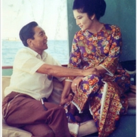
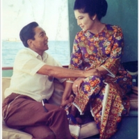
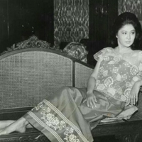
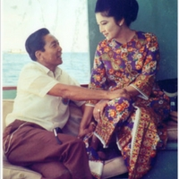
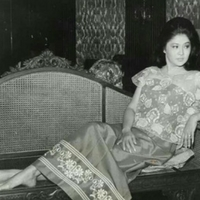
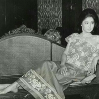
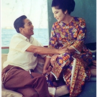
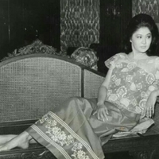

 





Marcos declared martial law on September 21, 1972, and did not lift it until January 17, 1981.
During this time, he promise to create a "New Society". However, in the “New Society” Marcos’s cronies and his wife,
Imelda Romualdez-Marcos, wilfully engaged in rampant corruption. With her husband’s support, Imelda Marcos
built her own power base. She became governor of Metropolitan Manila and minister of human settlements.
In 1979 the United States reaffirmed Philippine sovereignty over U.S. military bases and continued to
provide military and economic aid to the Marcos regime. When martial law was lifted in 1981 and a
“New Republic” proclaimed, little had actually changed, and Marcos easily won reelection.
The beginning of the end of the Marcos era occurred when his chief political rival, Liberal Party leader Benigno “Ninoy” Aquino, was assassinated. Ninoy was assassinated as he disembarked from an airplane at the Manila International Airport on August 21, 1983. Marcos' cronies were charged with this crime but were acquitted. Aquino, however, became a martyr in the eyes of the people and his murder kickstarted the Filipinos' to rebel against the corrupt regime.
The Catholic Church, a coalition of old political opposition groups, the business elite, the left wing, and even factions of the armed forces all began to exert pressure on the regime. Feeling confident with the support given by the Reagan White House, Marcos called a “snap” presidential election for February 7, 1986.
When the Marcos-dominated National Assembly proclaimed Marcos the winner, Cardinal Jaime Sin and key military leaders rallied around the apparent majority vote winner, Aquino’s widow, Corazon Cojuango Aquino. A popular uprising known as The People Power Movement occured that was consists of priests, nuns, ordinary citizens, and children, supported by defecting military units. It ousted Marcos on the day of his inauguration (February 25, 1986) and brought Aquino to power in an almost bloodless revolution.